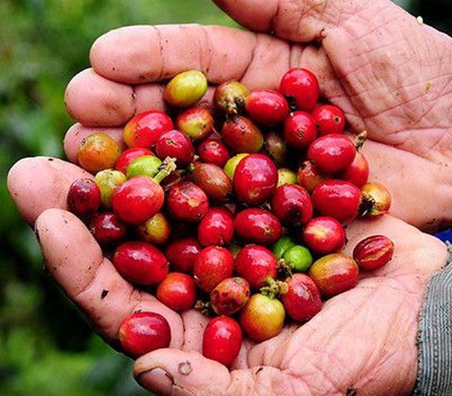
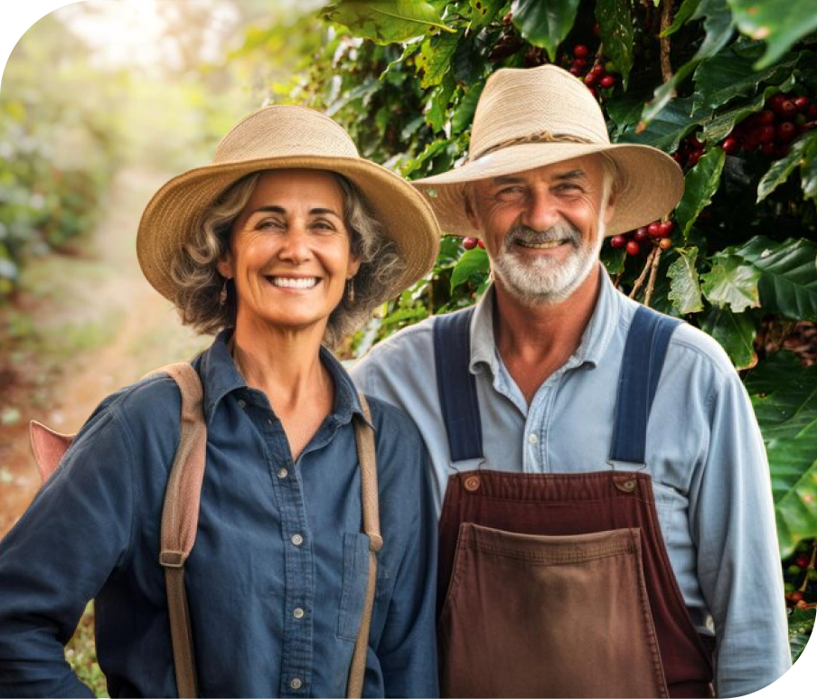

Do coração das montanhas de Minas para a sua xícara.
Cada grão do Raiz Café nasce do trabalho, da tradição e do cuidado de famílias que dedicam suas vidas ao cultivo do café. Histórias reais, colheitas cuidadosas e o sabor autêntico de quem faz do café um legado.

Inspirado nas tradições cafeeiras de Minas Gerais, o Raiz Café valoriza produtores que cultivam cada grão com dedicação, respeito à terra e amor pelo que fazem.
Torrefação artesanal em pequenos lotes para preservar a essência de cada origem. Seu café chega fresco, equilibrado e repleto de aromas e sabores.
Embalagens especiais com válvula desgasificadora preservam o frescor e a qualidade do café até o momento do preparo.

"O melhor café não nasce apenas da terra. Nasce das mãos, das histórias e da dedicação de quem transforma o cultivo em legado." — Olavo e Maria, fundadores do Raiz Café
O Raiz Café nasceu do encontro entre a tradição e o cuidado. Inspirado pelas famílias que fazem do café um modo de vida, levamos até você grãos selecionados que carregam a essência das montanhas de Minas Gerais. Cada safra representa anos de aprendizado, respeito à terra e dedicação em cada etapa do cultivo. Mais do que oferecer um café especial, queremos compartilhar histórias, preservar valores e celebrar a riqueza da cultura cafeeira brasileira. Em cada xícara, existe um convite: desacelerar, apreciar os pequenos momentos e sentir o verdadeiro sabor das nossas raízes.
Olavo representa as tradições cafeeiras de Minas Gerais. Seu conhecimento, construído ao longo de gerações, reflete o respeito pela terra e o compromisso com a qualidade presente em cada colheita.
Maria simboliza o cuidado e a hospitalidade mineira. Seu olhar atento aos detalhes e sua paixão pelo café transformam cada experiência em um momento acolhedor e inesquecível.
 Gourmet
Gourmet
Notas de chocolate, caramelo e amêndoa. Torra média, acidez suave.
 Novo
Novo
Artesanal, 600ml. Feito à mão por artesãs de Minas Gerais.
 Especial
Especial
Processo natural. Notas frutadas de cereja e jasmim, corpo sedoso.
"O Reserva da Família me lembrou o café da minha avó. Aquele cheiro, aquele sabor... é como uma viagem no tempo em cada xícara."
"Compro todo mês. O Vale D'ouro é simplesmente incrível. Nunca pensei que café especial pudesse ser tão acessível e gostoso."
"O bule de cerâmica é uma obra de arte. Combina lindo com a minha cozinha e mantém o café quente por muito tempo. Recomendo!"
Seu carrinho está vazio.
Que tal um cafezinho?